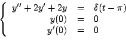
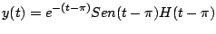
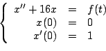
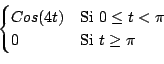
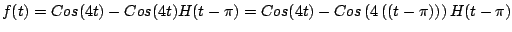
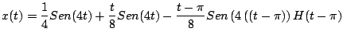
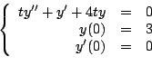
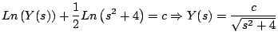

|
|
|
|
|Instituto Tecnológico de Costa Rica|Escuela de Matemática| M. Sc. Geovanni Figueroa M. |
1 2
3 4
5 6 7
8 9
10 11 12
13 14 15
16
|
|
Solución de ecuaciones diferenciales
La transformada de Laplace es útil para resolver ecuaciones diferenciales que involucran funciones
Ejemplo

Solución
Y al aplicar la transformada inversa

La gráfica de la solución
Ejemplo

donde

Solución
La función
Primero usemos la función de Heaviside para reescribir

Aplicando transformada tenemos que
Al aplicar la transformada inversa obtenemos

La gráfica de
Ejemplo

Solución
Integrando obtenemos que

De donde obtenemos que
Para determinar el valor de
|